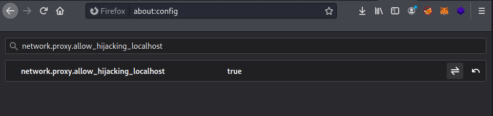

Test site on localhost
1. Add an entry to your Hosts file: myapp 127.0.0.1 Then in your browser visit http://myapp:<address> In Windows your Hosts file can be found at C:/windows/system32/drivers/etc/hosts.
2. (For Firefox) Go to about:config and change network.proxy.allow_hijacking_localhost to true.
3. Try http://127.0.0.3.:80 instead of http://127.0.0.3:80 (dot added after IP address)
Bibliography:
https://forum.portswigger.net/thread/burp-suite-not-intercept-with-my-localhost-area-b7cc4742